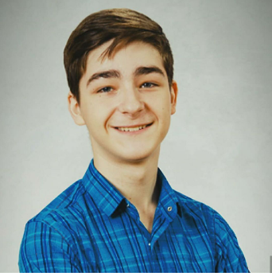

Yelyzaveta Horbunova / Єлизавета Горбунова
Andrew Zhukov / Андрій Жуков
Роль в команді: Lead Coach/Mentor 2,
Батько одного із учасників команди (Нікіти Жукова).
Програмування Java, JavaScript, функціональне. Додатки для Web, Android.
Пройшов тренінг з підготовки менторів-вчителів для координації команд у турнірі FIRST Tech Challenge, який був організований міською ініціативою Kyiv Smart City спільно з навчальним STEM-центром «Сократ» та технічним партнером компанією 2D3Dдля.
Захоплення: математика, музика, спорт.

Viktoriia Olomutska / Вікторія Оломуцька
Роль в команді: Mentor.
Займається зовнішніми комунікаціями команди.
Адмін FB сторінки та групи Team 16823 - WinXspace.
Мати одного із учасників команди (Даміра Мірталібова).
Представник ініціативи KyivSmartCity.
Брала участь у робототехнічних змаганнях Best Robo Fest 2019 та MakeX UA як другий ментор команди.
Пройшла тренінг з підготовки менторів-вчителів для координації команд у турнірі FIRST Tech Challenge, який був організований міською ініціативою Kyiv Smart City спільно з навчальним STEM-центром «Сократ» та технічним партнером компанією 2D3Dдля.
Полюбляє вело прогулки містом та мандрівки Європою.
Name / Ім'я
Роль в команді: User mentor
Захоплюється (……………….).
Milana Sudareva / Мілана Сударева - 16 років
Роль в команді: (...)
Учениця Скандинавської гімназії.
Брала участь у робототехнічних змаганнях Best Robo Fest 2019 (Robo Race, Robo Maze, Авторські: Robo Sumo) та MakeX UA.
Захоплюється ………………..
Boghdan Mostovoy / Богдан Мостовой - 16 років
Роль в команді: (ххххххххххх)
Учень Скандинавської гімназії.
Брав участь у робототехнічних змаганнях Best Robo Fest2019 (Robo Race, Robo Maze, Авторські: Robo Sumo) та MakeX UA.
Участник музикальної групи (……).
Захоплюється (……..).

Fedir Fedosov / Федір Федосов - 13 років
Роль в команді: (ххххххххххх)
Учень Скандинавської гімназії.
Брав участь у робототехнічних змаганнях Best Robo Fest2019 (Robo Race, Robo Maze)
Участник музикальної групи (………).
Захоплюється (………).
Nikita Zhukov / Нікіта Жуков - 14 років
Роль в команді: (ххххххххххх)
Брав участь у робототехнічних змаганнях Best Robo Fest2019 (Robo Race, Robo Maze)
Участник музикальної групи (………).
Захоплюється (………).
Damir Mirtalibov / Дамір Мірталібов - 12 років
Роль в команді: (ххххххххххх)
Учень спеціалізованої школи №80 Печерського р-ну міста Києва.
Активно приймає участь у різних конкурсах та змаганнях з IT. Наприклад його проект в категорії "Здоровий образ життя" на Всеукраїнському конкурсу «Володарі Scratch» посів 17 з 88 місць.
Дамір зайняв 3 місце у конкурсі #smartпокоління від KyivSmartCity з відеороботою про “чудолавку” на сонячних батареях. Також брав участь у робототехнічних змаганнях Best Robo Fest 2019 (Scratch, Robo Race, Robo Sumo) та MakeX UA.
Полюбляє грати з друзями в футбол, квадрат, ходити до квест кімнат.

Matvey Ilchenko / Матвій Ільченко - 14 років
Роль в команді: ххххххххххх
Учень спеціалізованої школа № 17
Подільського р-ну м. Києва з поглибленим вивченням математики
Займався в центрі робототехники "BOTEON", програмування Ардуіно,
“Технічне конструювання (робототехніка)” від КПДЮ.
Декілька разів брав участь в First Lego League, а саме:
2015 - trash trek;
2016 - animal allies (перше місце в номінації "гра роботів");
2017 - hydro dynamics.
Захоплюється вело прогулянками, Web програмуванням, комп'ютерним адмініструванням.

Andrey Stepanov / Андрій Степанов - 15 років
Andrey Stepanov / Андрій Степанов - 15 років
Роль в команді: ххххххххххх
Учень спеціалізованої школа № 80
Печерського-ну м. Києва
Займався курсами по програмуванню Ардуіно, трохи знає HTML.
Майже вступив до школи програмування Samsung.
Зайняв зі змагання з карате 2 місце.
Мета в житті: Стати програмістом по роботам, поїхати / вчитися в США.
Девіз життя: Тільки развиток, не сиджу на місці.
Хобі: Вчить самостійно англійську.
Tanny Lutsyk / Тетяна Луцик - 15 років
Роль в команді: піар-менеджер
Учениця Скандинавської гімназії.
Захоплюється танцями (7 стілів), мовами (8 іноземних), псіхологією, медициною, фотографією та точних наук
Yeva Petukhova/ / Єва Петухова - 16 років
Роль в команді: фотограф та помічник з візуалом команди, адмін сторінки команди в Instagram, учасник команди піару WinXspace.
Учениця Скандинавської гімназії.
Захоплюється: фотографією, кіномистецтвом.